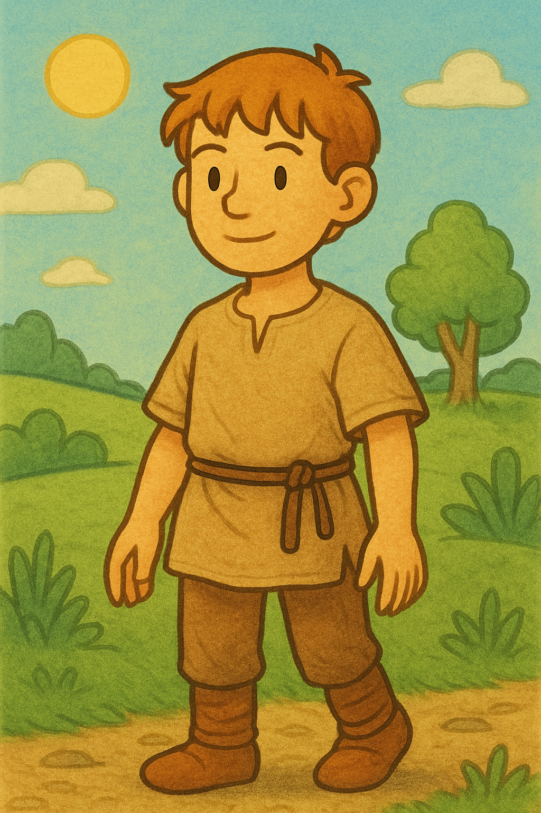
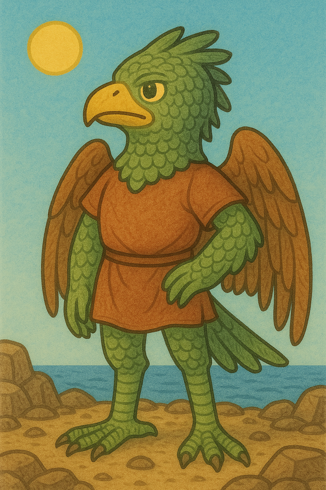
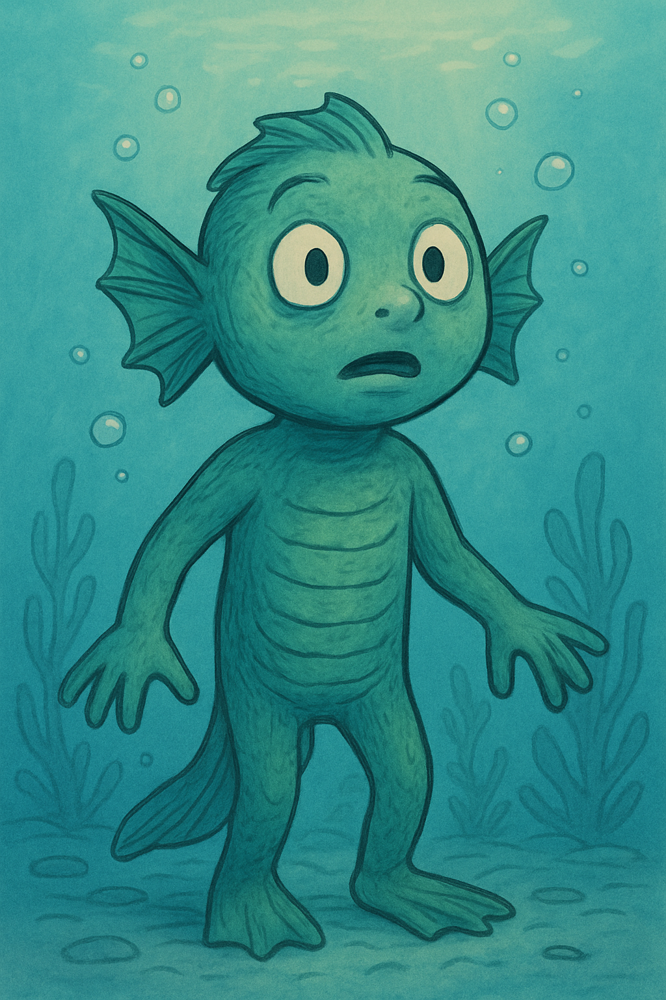
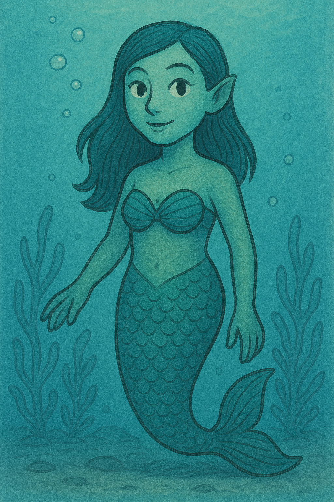

Races
Humans
 Like Merrows are not very versital biologicly speaking. They can not fly or swim well, or live underwater outside of the underwater Haydori cities. What they lack in naturally ability they make up for in intelegance. They are very resourcefull and can build things to help them suceed.
Avairi
 Part reptile and part bird. This race is able to take to the skies. They do not like to get wet, which has been a major disadvantage for a planet that is technically all ocean.
Haydori
 Half Amphibian and half Fish, the Haydori can live both in the water and out. These creatures stand on two flipers like legs like humans, but are also great swimmers.
Merrows
 Mermaid and Merman. A race that look a lot like humans from the waist up, but are very much a fish from the waist down and are unable to be out of the water for very long. When in the water though, they are fast and agile.